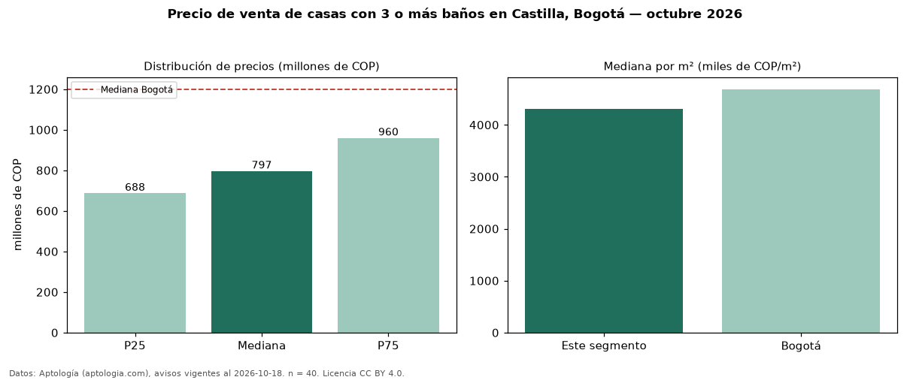

Precio de venta de casas con 3 o más baños en Castilla, Bogotá — octubre 2026
Con 40 avisos vigentes, el precio mediano de casas con 3 o más baños en venta en Castilla (localidad de Kennedy), Bogotá es COP 797 millones. Frente a la mediana de todas las casas en venta de Castilla (COP 700 millones, n = 62), queda 14 % por encima; este segmento reúne el 65 % de esos avisos. Por metro cuadrado, la mediana es COP 4,31 millones/m² (n = 39), 7 % por debajo del conjunto de referencia (COP 4,65 millones/m²). El área mediana anunciada es 191 m². El segmento con más oferta es el de 3 o más habitaciones (40 avisos, mediana COP 797 millones). El estrato más frecuente es 3 (89 % de los avisos con estrato). La mediana de todas las casas en venta de Bogotá es COP 1,20 mil millones (−34 % de diferencia). 94 % de los avisos con el dato declara parqueadero. Datos: Aptología (aptologia.com), CC BY 4.0 — https://www.aptologia.com/casas-en-venta/bogota/castilla. Archivos: PDF, CSV con las cifras y gráfica PNG.

| Avisos únicos | 40 |
|---|---|
| Percentil 25 | COP 687.500.000 |
| Mediana | COP 797.000.000 |
| Percentil 75 | COP 960.000.000 |
| Mediana por m² | COP 4.310.344 |
Fuente: avisos vigentes de portales inmobiliarios recopilados por Aptología, deduplicados (mínimo 30 avisos únicos por celda). Precios pedidos, no cerrados. Fecha: 2026-10-18.